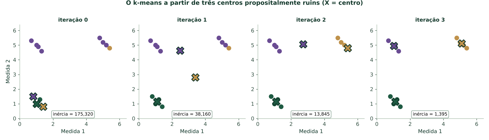
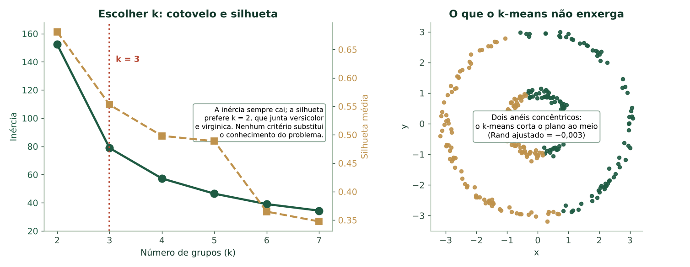

K-means
Particiona as observações em k grupos minimizando a soma de quadrados dentro dos grupos, por iterações entre atribuição e recálculo dos centros.
Comece por aqui
O k-médias parte de \(k\) centros e alterna dois passos até a convergência: atribuir cada observação ao centro mais próximo e recalcular cada centro como a média do seu grupo. É o método de agrupamento mais usado, e também o mais fácil de aplicar mal — porque sempre devolve \(k\) grupos, mesmo quando eles não existem ou não têm a forma que o método procura.
A primeira é o mínimo local: nos doze pontos do exemplo, apenas 68,9% das 2 000 partidas aleatórias chegam ao ótimo global. A segunda é a forma dos grupos: nos três cenários da última parte, a estrutura é óbvia num gráfico e o k-médias devolve índice de Rand ajustado em torno de zero nos três.
O que é o método
O objetivo é explícito: encontrar a partição em \(k\) grupos que minimiza a soma dos quadrados das distâncias de cada observação ao centro do seu grupo. Esse objetivo tem um nome — inércia, ou soma de quadrados intragrupos — e é a quantidade que o algoritmo faz decrescer a cada passo.
O problema é NP-difícil em geral, e o algoritmo de Lloyd é uma heurística: ele garante que a inércia nunca aumenta, logo converge, mas apenas para um mínimo local. É por isso que se roda o algoritmo várias vezes a partir de inicializações diferentes e se guarda a solução de menor inércia.

O k-médias e o critério de Ward do agrupamento hierárquico otimizam a mesma função objetivo. A diferença é a estratégia de busca: Ward procede por fusões gulosas e irreversíveis, enquanto o k-médias reatribui pontos livremente a cada iteração. Em consequência, o k-médias costuma alcançar inércia menor para o mesmo k, mas não oferece hierarquia nem determinismo.
Pressupostos e como verificá-los
Como o agrupamento hierárquico, o k-médias não é um teste de hipóteses. Mas, diferentemente dele, o k-médias tem um modelo implícito bastante específico — e os requisitos abaixo decorrem diretamente da função objetivo.
| Requisito | Por que importa | Como verificar |
|---|---|---|
| Variáveis numéricas | A média do grupo precisa fazer sentido. | Para dados categóricos, use k-modas ou Gower + PAM. |
| Grupos aproximadamente esféricos | A inércia euclidiana procura blocos isotrópicos. | Gráfico de dispersão; compare com misturas de gaussianas. |
| Tamanhos e dispersões parecidos | Grupos desiguais são partidos ao meio. | Examine os tamanhos obtidos; desconfie de partições equilibradas demais. |
| Escalas comparáveis | Variáveis de maior variância dominam. | Compare desvios-padrão; decida sobre padronizar. |
| Ausência de atípicos extremos | A média é sensível a eles. | Examine as maiores distâncias ao centro; considere PAM. |
| Número de partidas suficiente | Uma partida só cai em mínimo local. | Use nstart = 25 ou mais. |
| k escolhido com justificativa | O método não decide k. | Cotovelo, silhueta, Calinski–Harabasz, conhecimento do domínio. |
A inércia é reduzida mais eficientemente ao se partir um grupo grande e disperso do que ao se isolar um grupo pequeno e compacto. O resultado é uma tendência sistemática a produzir grupos de tamanhos parecidos. No terceiro cenário desta ficha, com 285 pontos dispersos e 15 compactos, o k-médias devolve 140 e 160 — ele parte o grupo grande ao meio e ignora o pequeno por completo.
Formulação e cálculo
A formulação é de otimização, não de inferência.
A segunda forma mostra que minimizar a distância aos centros equivale a minimizar as distâncias médias dentro dos grupos — o centro não precisa aparecer na definição do objetivo.
Em que:
- \(x_i\)
- vetor de medidas da observação \(i\)
- \(C_j\)
- conjunto de índices do grupo \(j\)
- \(c_j\)
- centro (centroide) do grupo \(j\)
- \(k\)
- número de grupos, fixado pelo analista
- \(W(C)\)
- inércia: soma de quadrados dentro dos grupos
Exemplo numérico, passo a passo
Doze amostras em duas medidas, formando visivelmente três blocos de quatro pontos. Os três centros iniciais são colocados propositalmente no mesmo canto, para mostrar que o algoritmo se recupera de uma inicialização ruim — e quanto trabalho isso exige.
| Iteração | Tamanhos dos grupos | Inércia |
|---|---|---|
| 1 | 2 · 2 · 8 | 58,3487 |
| 2 | 4 · 1 · 7 | 28,3586 |
| 3 | 4 · 4 · 4 | 1,3950 |
| 4 | 4 · 4 · 4 | 1,3950 — convergiu |
Os centros iniciais são \(c_1=(1{,}0;\,1{,}0)\), \(c_2=(1{,}4;\,0{,}8)\) e \(c_3=(0{,}8;\,1{,}5)\). O ponto \((5{,}0;\,5{,}2)\) está a distâncias
e vai, portanto, para o grupo 3 — que acaba recebendo oito dos doze pontos. Os centros recalculados são \((1{,}10;\,1{,}15)\), \((3{,}40;\,2{,}80)\) e \((2{,}4875;\,4{,}625)\), e a inércia é 58,35.
Na terceira iteração a atribuição já é a correta, com quatro pontos por grupo, e a inércia cai para 1,3950. A quarta iteração não altera nada: os centros pararam de se mover, que é o critério de parada.
A inicialização, quantificada
| Inércia final | Frequência | Proporção |
|---|---|---|
| 1,3950 | 1 378 | 68,9% — ótimo global |
| 29,9237 | 218 | 10,9% |
| 29,9788 | 113 | 5,7% |
| 30,2862 | 15 | 0,8% |
| 34,3775 | 75 | 3,8% |
| 34,3842 | 175 | 8,8% |
Quase um terço das partidas termina em um mínimo local com inércia mais de vinte vezes maior que o ótimo. É exatamente o que nstart no R e n_init no Python existem para evitar: rodar várias vezes e guardar a melhor.
Propriedades
- A inércia é monótona não crescente ao longo das iterações, o que garante convergência em um número finito de passos.
- A convergência é para um mínimo local; o problema global é NP-difícil para \(k\geq2\) em dimensão arbitrária.
- As fronteiras entre grupos são hiperplanos perpendiculares aos segmentos que ligam centros: a partição é um diagrama de Voronoi.
- A inércia é monótona decrescente em \(k\), e por isso não pode ser usada sozinha para escolher \(k\).
- Minimiza a mesma função objetivo que o critério de Ward do agrupamento hierárquico, por outra estratégia de busca.
- A inicialização k-means++ reduz a chance de mínimo local escolhendo centros iniciais distantes entre si, com garantia teórica de fator \(O(\log k)\).
- O custo por iteração é \(O(nkp)\), o que torna o método viável para \(n\) muito grande — ao contrário do agrupamento hierárquico.
Como interpretar os resultados
| Elemento | O que informa | Cuidado |
|---|---|---|
| tot.withinss | A inércia da solução. | Só comparável entre soluções com o mesmo k. |
| centers | Os perfis médios dos grupos. | É aqui que o resultado ganha significado. |
| size | Tamanhos dos grupos. | Partições equilibradas demais são suspeitas. |
| between_SS / total_SS | Proporção da variação explicada. | Cresce sempre com k. |
| Silhueta média | Qualidade da separação. | Abaixo de 0,25, a estrutura é fraca. |
| Calinski–Harabasz | Razão entre dispersão inter e intragrupos. | Máximo sugere k. |
| iter | Iterações até convergir. | Se bater o limite, aumente iter.max. |
Em iris, o cotovelo da inércia está em k = 3 (queda de 48,2% ao passar de 2 para 3, e de apenas 27,4% ao passar de 3 para 4); a silhueta máxima está em k = 2 (0,681 contra 0,553); e o critério de Calinski–Harabasz é máximo em k = 3 (561,6). A discordância não é falha de nenhum deles: a geometria dos dados tem dois blocos, porque versicolor e virginica se sobrepõem, e a divisão em três vem da biologia. Declare o critério usado e a razão da escolha.
Como executar no R e em Python
Onde executar o código em Python
Não é preciso instalar nada: o Google Colab é um computador na nuvem, gratuito, que executa Python pelo navegador e já traz as bibliotecas usadas aqui (numpy, scipy e matplotlib).
A função kmeans() do pacote stats faz o trabalho. Dois argumentos merecem atenção: nstart, que deve ser 25 ou mais para evitar mínimos locais, e algorithm, cujo padrão (Hartigan–Wong) é melhor que o algoritmo clássico de Lloyd. Para a escolha de k, factoextra::fviz_nbclust() produz os três gráficos usuais; para avaliar, cluster::silhouette(). Nos casos em que o k-médias falha, mclust::Mclust(), dbscan::dbscan() e kernlab::specc() são as alternativas.
set.seed(7)
km <- kmeans(X, centers = 3, nstart = 50)
km$centers; km$size; km$tot.withinss
mean(cluster::silhouette(km$cluster, dist(X))[, 3])
Exemplo de aplicação
Contexto dos dados
A aplicação usa iris — as mesmas 150 flores das fichas de MANOVA e de agrupamento hierárquico, o que permite comparar os métodos diretamente. Como lá, a espécie não entra no agrupamento: ela é revelada no final para avaliar o resultado. A ficha fecha com três cenários fictícios construídos para exibir os limites do método.
Código em R
# k-médias: exemplo completo ----
# Pacotes: stats (base), cluster, factoextra, mclust (índice de Rand)
# install.packages(c("cluster", "factoextra", "mclust"))
# PARTE 1 - o algoritmo, passo a passo, em doze pontos
P <- matrix(c(1.0,1.0, 1.4,0.8, 0.8,1.5, 1.2,1.3,
5.0,5.2, 5.4,4.8, 4.8,5.5, 5.2,5.0,
1.0,5.0, 1.3,4.6, 0.7,5.3, 1.1,4.9),
ncol = 2, byrow = TRUE, dimnames = list(NULL, c("x1", "x2")))
P
plot(P, pch = 19, asp = 1, main = "Doze amostras")
# Centros iniciais propositalmente ruins: os três no mesmo canto
ini <- matrix(c(1.0,1.0, 1.4,0.8, 0.8,1.5), ncol = 2, byrow = TRUE)
km_ruim <- kmeans(P, centers = ini, iter.max = 20, algorithm = "Lloyd")
km_ruim$cluster
km_ruim$centers
km_ruim$tot.withinss # a inércia final
km_ruim$iter
# Uma partida só pode cair num mínimo local; nstart resolve
set.seed(1)
km <- kmeans(P, centers = 3, nstart = 25)
km$tot.withinss
km$centers
km$size
# Quantas partidas caem no mínimo global? (experimento)
inercias <- replicate(2000, kmeans(P, centers = 3, nstart = 1,
algorithm = "Lloyd")$tot.withinss)
round(sort(table(round(inercias, 4)), decreasing = TRUE) / 2000, 4)
# PARTE 2 - iris: 150 flores, quatro medidas, sem usar a espécie
data(iris)
X <- iris[, 1:4]
set.seed(7)
# Escolha de k: inércia, silhueta e Calinski-Harabasz
library(cluster); library(factoextra)
res <- t(sapply(2:7, function(k) {
km <- kmeans(X, centers = k, nstart = 50)
sil <- mean(silhouette(km$cluster, dist(X))[, 3])
c(k = k, inercia = km$tot.withinss, silhueta = sil)
}))
round(res, 4)
fviz_nbclust(X, kmeans, method = "wss") # cotovelo
fviz_nbclust(X, kmeans, method = "silhouette") # silhueta
# A solução com k = 3
km3 <- kmeans(X, centers = 3, nstart = 50)
km3$centers
km3$size
table(iris$Species, km3$cluster)
library(mclust)
adjustedRandIndex(iris$Species, km3$cluster) # dados originais
adjustedRandIndex(iris$Species, kmeans(scale(X), 3, nstart = 50)$cluster)
fviz_cluster(km3, data = X, ellipse.type = "norm")
# PARTE 3 - o que o k-médias não consegue fazer (dados fictícios)
set.seed(3)
# (a) dois anéis concêntricos
ang <- runif(300, 0, 2*pi); r <- c(rnorm(150, 1, 0.08), rnorm(150, 3, 0.08))
An <- cbind(r*cos(ang), r*sin(ang))
plot(An, col = kmeans(An, 2, nstart = 25)$cluster, pch = 19, asp = 1,
main = "Anéis concêntricos: o k-médias corta ao meio")
# (b) grupos alongados, deslocados perpendicularmente ao eixo longo
library(MASS)
S <- matrix(c(9, 8.5, 8.5, 9), 2)
Al <- rbind(mvrnorm(150, c(0, 0), S), mvrnorm(150, c(1.6, -1.6), S))
plot(Al, col = kmeans(Al, 2, nstart = 25)$cluster, pch = 19, asp = 1)
# (c) tamanhos e dispersões muito desiguais
Bd <- rbind(cbind(rnorm(285, 0, 1.2), rnorm(285, 0, 1.2)),
cbind(rnorm(15, 2.5, 0.3), rnorm(15, 0, 0.3)))
plot(Bd, col = kmeans(Bd, 2, nstart = 25)$cluster, pch = 19, asp = 1)
# Alternativas para esses casos
# kernlab::specc() - agrupamento espectral (resolve os anéis)
# dbscan::dbscan() - densidade (resolve os anéis e identifica ruído)
# mclust::Mclust() - misturas de gaussianas (resolve os alongados)
# cluster::pam() - k-medoides, mais robusto a atípicos
A mesma análise em Python, com os resultados
Cole o código em um notebook do Google Colab ↗ e execute com Shift+Enter. Os valores abaixo são a saída desse código.
# Bibliotecas: numpy, scipy, matplotlib e scikit-learn (todas já no Google Colab)
import numpy as np
from scipy.spatial.distance import cdist
from sklearn.datasets import load_iris
# ===================================================================
# PARTE 1 - o algoritmo, passo a passo
# Dados fictícios: doze amostras, duas medidas.
P = np.array([[1.0,1.0],[1.4,0.8],[0.8,1.5],[1.2,1.3],
[5.0,5.2],[5.4,4.8],[4.8,5.5],[5.2,5.0],
[1.0,5.0],[1.3,4.6],[0.7,5.3],[1.1,4.9]])
print("Doze amostras, duas medidas. Partimos de centros propositalmente ruins.")
centros = np.array([[1.0,1.0],[1.4,0.8],[0.8,1.5]]) # os três no mesmo canto
print(f"Centros iniciais:\n{centros}")
for it in range(1, 9):
d = cdist(P, centros)
rot = d.argmin(axis=1)
novos = np.array([P[rot==j].mean(axis=0) if np.any(rot==j) else centros[j]
for j in range(3)])
inercia = sum(((P[rot==j]-novos[j])**2).sum() for j in range(3))
print(f"\niteração {it}")
print(f" atribuição: {rot}")
print(f" tamanhos: {[int(np.sum(rot==j)) for j in range(3)]}")
print(f" novos centros: {np.round(novos,4).tolist()}")
print(f" inércia (soma dos quadrados dentro dos grupos) = {inercia:.4f}")
if np.allclose(novos, centros, atol=1e-12):
print(" os centros pararam de se mover: convergiu")
break
centros = novos
print("\nO algoritmo alterna dois passos: atribuir cada ponto ao centro mais")
print("próximo e recalcular cada centro como a média do seu grupo. A inércia")
print("nunca aumenta, o que garante convergência — mas apenas para um mínimo LOCAL.")
# 1b. A dependência da inicialização
print("\nA inicialização importa: 2.000 partidas aleatórias")
rng = np.random.default_rng(7)
def kmeans(P, k, centros, iters=300):
for _ in range(iters):
rot = cdist(P, centros).argmin(axis=1)
novos = np.array([P[rot==j].mean(axis=0) if np.any(rot==j) else centros[j]
for j in range(k)])
if np.allclose(novos, centros): break
centros = novos
rot = cdist(P, centros).argmin(axis=1)
return centros, rot, sum(((P[rot==j]-centros[j])**2).sum() for j in range(k))
inercias = []
for _ in range(2000):
c0 = P[rng.choice(len(P), 3, replace=False)]
inercias.append(kmeans(P, 3, c0)[2])
inercias = np.array(inercias)
vals, cont = np.unique(np.round(inercias, 6), return_counts=True)
print(f"{'inércia final':>15}{'frequência':>12}{'proporção':>12}")
for v, c in zip(vals[:6], cont[:6]):
print(f"{v:15.4f}{c:12d}{100*c/2000:11.1f}%")
print(f" o mínimo global é {vals[0]:.4f}, alcançado em {100*cont[0]/2000:.1f}% das partidas")
print(" É por isso que se roda o algoritmo várias vezes (nstart no R, n_init no Python)")
print(" e se guarda a solução de menor inércia.")
# ===================================================================
# PARTE 2 - escolher k
print("\n" + "=" * 70)
print("iris: 150 flores, quatro medidas, sem usar a espécie")
d = load_iris(); X = d.data; esp = d.target
especies = ["setosa", "versicolor", "virginica"]
def melhor(P, k, tentativas=50, semente=0):
r = np.random.default_rng(semente)
best = None
for _ in range(tentativas):
c0 = P[r.choice(len(P), k, replace=False)]
c, rot, inr = kmeans(P, k, c0)
if best is None or inr < best[2]: best = (c, rot, inr)
return best
def silhueta(P, rot):
D = cdist(P, P); s = np.zeros(len(P))
for i in range(len(P)):
mesmo = rot == rot[i]; mesmo[i] = False
if mesmo.sum() == 0: s[i] = 0; continue
a = D[i, mesmo].mean()
b = min(D[i, rot == g].mean() for g in np.unique(rot) if g != rot[i])
s[i] = (b - a)/max(a, b)
return s
print(f"\n{'k':>3}{'inércia':>12}{'queda':>10}{'silhueta média':>17}{'Calinski-Harabasz':>20}")
inr_ant = None
guardados = {}
for k_ in range(2, 8):
c, rot, inr = melhor(X, k_, semente=k_)
guardados[k_] = (c, rot, inr)
sil = silhueta(X, rot).mean()
entre = sum(np.sum(rot==j)*((c[j]-X.mean(0))**2).sum() for j in range(k_))
ch = (entre/(k_-1))/(inr/(len(X)-k_))
q = "" if inr_ant is None else f"{100*(inr_ant-inr)/inr_ant:9.1f}%"
print(f"{k_:3d}{inr:12.3f}{q:>10}{sil:17.4f}{ch:20.2f}")
inr_ant = inr
print("\nA inércia sempre cai quando k aumenta: ela não pode ser usada sozinha.")
print("O 'cotovelo' é o ponto a partir do qual a queda deixa de compensar.")
print("A silhueta e o critério de Calinski-Harabasz tentam formalizar isso.")
# 2b. Comparação com a espécie
print("\nSolução com k = 3, comparada à espécie verdadeira")
c3, rot3, inr3 = guardados[3]
print(f"{'':<14}" + "".join(f"{f'grupo {g+1}':>10}" for g in range(3)))
for i, e in enumerate(especies):
print(f"{e:<14}" + "".join(f"{int(np.sum((rot3==g)&(esp==i))):10d}" for g in range(3)))
def rand_ajustado(a, b):
tab = np.zeros((len(np.unique(a)), len(np.unique(b))))
for i, va in enumerate(np.unique(a)):
for j, vb in enumerate(np.unique(b)):
tab[i, j] = np.sum((a == va) & (b == vb))
c2 = lambda m: m*(m-1)/2
sij = c2(tab).sum(); si = c2(tab.sum(1)).sum(); sj = c2(tab.sum(0)).sum()
return (sij - si*sj/c2(len(a)))/((si + sj)/2 - si*sj/c2(len(a)))
acerto = sum(max(np.sum((rot3==g)&(esp==i)) for i in range(3)) for g in range(3))
print(f"\nÍndice de Rand ajustado = {rand_ajustado(esp, rot3):.4f}")
print(f"Flores no grupo majoritário da sua espécie: {acerto} de 150 ({100*acerto/150:.1f}%)")
print(f"Centros encontrados (cm):")
for j in range(3):
print(f" grupo {j+1}: " + " ".join(f"{v:5.2f}" for v in c3[j]))
# 2c. A padronização
Z = (X - X.mean(0))/X.std(0, ddof=1)
cz, rotz, inrz = melhor(Z, 3, semente=3)
print(f"\nCom os dados padronizados: Rand ajustado = {rand_ajustado(esp, rotz):.4f}")
print(f"Com os dados originais: Rand ajustado = {rand_ajustado(esp, rot3):.4f}")
print("Como as quatro medidas estão na mesma unidade (cm) e a pétala separa muito")
print("melhor que a sépala, padronizar iguala os pesos e PIORA o resultado aqui.")
print("Quando as variáveis têm unidades diferentes, padronizar é obrigatório.")
# ===================================================================
# PARTE 3 - o que o k-means não consegue fazer
print("\n" + "=" * 70)
print("O k-means procura grupos ESFÉRICOS e de tamanhos parecidos.")
rng = np.random.default_rng(3)
# dois anéis concêntricos
ang = rng.uniform(0, 2*np.pi, 150)
r1 = rng.normal(1.0, 0.08, 150); r2 = rng.normal(3.0, 0.08, 150)
ang2 = rng.uniform(0, 2*np.pi, 150)
An = np.vstack([np.column_stack([r1*np.cos(ang), r1*np.sin(ang)]),
np.column_stack([r2*np.cos(ang2), r2*np.sin(ang2)])])
verdade = np.r_[np.zeros(150), np.ones(150)]
_, rot_an, _ = melhor(An, 2, semente=1)
print(f"\nDois anéis concêntricos (150 pontos cada):")
print(f" Rand ajustado do k-means = {rand_ajustado(verdade, rot_an):.4f}")
tam = [int(np.sum(rot_an==j)) for j in range(2)]
print(f" tamanhos dos grupos encontrados: {tam}")
print(" O k-means corta o plano em duas metades e falha por completo.")
# grupos alongados e paralelos, deslocados na direção PERPENDICULAR ao eixo longo
cov = [[9, 8.5], [8.5, 9]]
A1 = rng.multivariate_normal([0, 0], cov, 150)
A2 = rng.multivariate_normal([1.6, -1.6], cov, 150)
Al = np.vstack([A1, A2]); verd2 = np.r_[np.zeros(150), np.ones(150)]
_, rot_al, _ = melhor(Al, 2, semente=2)
print(f"\nDois grupos alongados e paralelos (eixo longo na diagonal, separação")
print(f"perpendicular a ele):")
print(f" Rand ajustado do k-means = {rand_ajustado(verd2, rot_al):.4f}")
print(" O k-means corta perpendicularmente ao eixo LONGO, que é onde a variação")
print(" é maior, e ignora a separação real.")
# tamanhos muito desiguais e dispersões diferentes
B1 = rng.normal([0,0], 1.2, (285, 2)); B2 = rng.normal([2.5,0], 0.3, (15, 2))
Bd = np.vstack([B1, B2]); verd3 = np.r_[np.zeros(285), np.ones(15)]
_, rot_bd, _ = melhor(Bd, 2, semente=4)
print(f"\nGrupos de tamanhos muito desiguais (285 e 15 pontos) e dispersões")
print(f"diferentes (DP de 1,2 e de 0,3):")
print(f" Rand ajustado do k-means = {rand_ajustado(verd3, rot_bd):.4f}")
print(f" tamanhos encontrados: {[int(np.sum(rot_bd==j)) for j in range(2)]}")
print(" Em vez de isolar o grupo pequeno, o k-means parte o grande ao meio:")
print(" dividir 285 pontos dispersos reduz mais a inércia do que separar 15.")
print("\nNos três casos a estrutura existe e salta aos olhos num gráfico, mas não é")
print("do tipo que o k-means procura: ele minimiza a soma de quadrados dentro dos")
print("grupos, o que equivale a procurar blocos esféricos, de tamanhos e dispersões")
print("parecidos. Agrupamento espectral e DBSCAN resolvem os anéis; misturas de")
print("gaussianas resolvem os grupos alongados e as dispersões desiguais; o")
print("agrupamento hierárquico com ligação média ou de Ward é mais flexível que o")
print("k-means nos dois últimos casos.")
Resultados da execução
Doze amostras, duas medidas. Partimos de centros propositalmente ruins.
Centros iniciais:
[[1. 1. ]
[1.4 0.8]
[0.8 1.5]]
iteração 1
atribuição: [0 1 2 0 2 1 2 2 2 2 2 2]
tamanhos: [2, 2, 8]
novos centros: [[1.1, 1.15], [3.4, 2.8], [2.4875, 4.625]]
inércia (soma dos quadrados dentro dos grupos) = 58.3487
iteração 2
atribuição: [0 0 0 0 2 1 2 2 2 2 2 2]
tamanhos: [4, 1, 7]
novos centros: [[1.1, 1.15], [5.4, 4.8], [2.7286, 5.0714]]
inércia (soma dos quadrados dentro dos grupos) = 28.3586
iteração 3
atribuição: [0 0 0 0 1 1 1 1 2 2 2 2]
tamanhos: [4, 4, 4]
novos centros: [[1.1, 1.15], [5.1, 5.125], [1.025, 4.95]]
inércia (soma dos quadrados dentro dos grupos) = 1.3950
iteração 4
atribuição: [0 0 0 0 1 1 1 1 2 2 2 2]
tamanhos: [4, 4, 4]
novos centros: [[1.1, 1.15], [5.1, 5.125], [1.025, 4.95]]
inércia (soma dos quadrados dentro dos grupos) = 1.3950
os centros pararam de se mover: convergiu
O algoritmo alterna dois passos: atribuir cada ponto ao centro mais
próximo e recalcular cada centro como a média do seu grupo. A inércia
nunca aumenta, o que garante convergência — mas apenas para um mínimo LOCAL.
A inicialização importa: 2.000 partidas aleatórias
inércia final frequência proporção
1.3950 1378 68.9%
29.9237 218 10.9%
29.9788 113 5.7%
30.2862 15 0.8%
34.3775 75 3.8%
34.3842 175 8.8%
o mínimo global é 1.3950, alcançado em 68.9% das partidas
É por isso que se roda o algoritmo várias vezes (nstart no R, n_init no Python)
e se guarda a solução de menor inércia.
======================================================================
iris: 150 flores, quatro medidas, sem usar a espécie
k inércia queda silhueta média Calinski-Harabasz
2 152.348 0.6810 513.92
3 78.851 48.2% 0.5528 561.63
4 57.228 27.4% 0.4981 530.77
5 46.446 18.8% 0.4887 495.54
6 39.040 15.9% 0.3648 473.85
7 34.409 11.9% 0.3475 448.12
A inércia sempre cai quando k aumenta: ela não pode ser usada sozinha.
O 'cotovelo' é o ponto a partir do qual a queda deixa de compensar.
A silhueta e o critério de Calinski-Harabasz tentam formalizar isso.
Solução com k = 3, comparada à espécie verdadeira
grupo 1 grupo 2 grupo 3
setosa 0 50 0
versicolor 48 0 2
virginica 14 0 36
Índice de Rand ajustado = 0.7302
Flores no grupo majoritário da sua espécie: 134 de 150 (89.3%)
Centros encontrados (cm):
grupo 1: 5.90 2.75 4.39 1.43
grupo 2: 5.01 3.43 1.46 0.25
grupo 3: 6.85 3.07 5.74 2.07
Com os dados padronizados: Rand ajustado = 0.6201
Com os dados originais: Rand ajustado = 0.7302
Como as quatro medidas estão na mesma unidade (cm) e a pétala separa muito
melhor que a sépala, padronizar iguala os pesos e PIORA o resultado aqui.
Quando as variáveis têm unidades diferentes, padronizar é obrigatório.
======================================================================
O k-means procura grupos ESFÉRICOS e de tamanhos parecidos.
Dois anéis concêntricos (150 pontos cada):
Rand ajustado do k-means = -0.0030
tamanhos dos grupos encontrados: [149, 151]
O k-means corta o plano em duas metades e falha por completo.
Dois grupos alongados e paralelos (eixo longo na diagonal, separação
perpendicular a ele):
Rand ajustado do k-means = -0.0009
O k-means corta perpendicularmente ao eixo LONGO, que é onde a variação
é maior, e ignora a separação real.
Grupos de tamanhos muito desiguais (285 e 15 pontos) e dispersões
diferentes (DP de 1,2 e de 0,3):
Rand ajustado do k-means = -0.0031
tamanhos encontrados: [140, 160]
Em vez de isolar o grupo pequeno, o k-means parte o grande ao meio:
dividir 285 pontos dispersos reduz mais a inércia do que separar 15.
Nos três casos a estrutura existe e salta aos olhos num gráfico, mas não é
do tipo que o k-means procura: ele minimiza a soma de quadrados dentro dos
grupos, o que equivale a procurar blocos esféricos, de tamanhos e dispersões
parecidos. Agrupamento espectral e DBSCAN resolvem os anéis; misturas de
gaussianas resolvem os grupos alongados e as dispersões desiguais; o
agrupamento hierárquico com ligação média ou de Ward é mais flexível que o
k-means nos dois últimos casos.
| k | Inércia | Queda | Silhueta média | Calinski–Harabasz |
|---|---|---|---|---|
| 2 | 152,348 | — | 0,6810 | 513,92 |
| 3 | 78,851 | 48,2% | 0,5528 | 561,63 |
| 4 | 57,228 | 27,4% | 0,4981 | 530,77 |
| 5 | 46,446 | 18,8% | 0,4887 | 495,54 |
| 6 | 39,040 | 15,9% | 0,3648 | 473,85 |
| 7 | 34,409 | 11,9% | 0,3475 | 448,12 |
| Espécie | Grupo 1 | Grupo 2 | Grupo 3 |
|---|---|---|---|
| setosa | 0 | 50 | 0 |
| versicolor | 48 | 0 | 2 |
| virginica | 14 | 0 | 36 |
| Grupo | Compr. sépala | Larg. sépala | Compr. pétala | Larg. pétala |
|---|---|---|---|---|
| 1 (versicolor) | 5,90 | 2,75 | 4,39 | 1,43 |
| 2 (setosa) | 5,01 | 3,43 | 1,46 | 0,25 |
| 3 (virginica) | 6,85 | 3,07 | 5,74 | 2,07 |
| Configuração | Rand ajustado | Leitura |
|---|---|---|
| Dados originais | 0,7302 | 134 de 150 no grupo majoritário (89,3%). |
| Dados padronizados | 0,6201 | Padronizar piora, como no agrupamento hierárquico. |
| Ward hierárquico, originais (outra ficha) | 0,7312 | Praticamente idêntico. |
| Cenário | Rand ajustado | O que o k-médias faz |
|---|---|---|
| Dois anéis concêntricos (150 + 150) | −0,0030 | Corta o plano em duas metades: 149 · 151. |
| Dois grupos alongados, separados perpendicularmente ao eixo longo | −0,0009 | Corta perpendicularmente ao eixo de maior variação, que é o errado. |
| 285 pontos dispersos (DP 1,2) e 15 compactos (DP 0,3) | −0,0031 | Parte o grupo grande ao meio: 140 · 160. |
Leitura de iris: com k = 3 e os dados originais, o k-médias recupera a estrutura de espécies com Rand ajustado de 0,730 — 134 das 150 flores no grupo majoritário da sua espécie. A setosa é isolada perfeitamente (50 de 50). Os 16 erros estão todos na fronteira entre versicolor e virginica: 14 virginicas foram atribuídas ao grupo da versicolor, e 2 versicolores ao da virginica. Os centros encontrados são interpretáveis e correspondem aos perfis das três espécies.
O resultado é praticamente igual ao do agrupamento hierárquico de Ward sobre os mesmos dados (0,7302 contra 0,7312), o que faz sentido: os dois otimizam a mesma função objetivo. E, como lá, padronizar piora o resultado — de 0,730 para 0,620 — porque as quatro medidas estão na mesma unidade e a pétala, que separa bem, tem variação naturalmente maior que a sépala, que separa mal.
Leitura dos cenários de falha: nos três casos a estrutura existe, salta aos olhos num gráfico de dispersão, e o k-médias devolve índice de Rand ajustado em torno de zero — ou seja, uma partição não melhor que o acaso. As falhas não são acidentes de inicialização: cada cenário foi rodado com várias partidas e o resultado reflete o ótimo encontrado. Elas decorrem diretamente da função objetivo. Minimizar a soma de quadrados dentro dos grupos equivale a procurar blocos esféricos, de tamanhos e dispersões parecidos; estruturas em anel, estruturas alongadas cuja separação não coincide com o eixo de maior variação e grupos de tamanhos muito desiguais estão todos fora desse molde.
As alternativas são específicas a cada caso: o agrupamento espectral e o DBSCAN resolvem os anéis, porque trabalham com conectividade e densidade em vez de distância a um centro; as misturas de gaussianas resolvem os grupos alongados e as dispersões desiguais, porque estimam uma matriz de covariância por grupo; e o agrupamento hierárquico com ligação média ou de Ward é mais flexível que o k-médias nos dois últimos casos. O diagnóstico, nos três, começa com um gráfico de dispersão — o que é um argumento forte para nunca aplicar o k-médias sem olhar os dados.
Erros comuns
| Erro | Como evitar |
|---|---|
Usar nstart = 1 | No exemplo, 31% das partidas caem em mínimo local. Use 25 ou mais. |
| Escolher k pela inércia sozinha | Ela sempre cai com k; use cotovelo, silhueta e Calinski–Harabasz juntos. |
| Aplicar sem olhar um gráfico de dispersão | Os três cenários de falha desta ficha são visíveis a olho nu. |
| Padronizar por reflexo | Com unidades iguais, pode custar informação: em iris o Rand cai de 0,730 para 0,620. |
| Confiar em partições equilibradas | O método tende a produzi-las mesmo quando os grupos são desiguais. |
| Aplicar a dados categóricos | A média de categorias não significa nada; use k-modas ou Gower + PAM. |
| Ignorar observações atípicas | A média é sensível; considere PAM ou k-medoides. |
| Interpretar os rótulos dos grupos como fixos | Eles são arbitrários e mudam entre execuções. |
| Incluir a variável que se quer prever | Em iris, a espécie não entra no agrupamento. |
| Tratar o resultado como classificação validada | O método não tem erro-padrão nem valor-p; valide por reamostragem. |
Alternativas e fluxo de trabalho
| Procedimento | Quando preferir |
|---|---|
| Agrupamento hierárquico | n moderado; quando interessa a hierarquia e não apenas uma partição. |
| PAM / k-medoides | Atípicos presentes; qualquer matriz de dissimilaridade; centros interpretáveis como observações reais. |
| Misturas de gaussianas (mclust) | Grupos alongados ou de dispersões diferentes; critérios como o BIC para escolher k. |
| DBSCAN | Grupos de forma arbitrária com densidade similar; identifica ruído e não exige k. |
| Agrupamento espectral | Estruturas conectadas mas não convexas, como os anéis desta ficha. |
| k-means++ ou mini-batch k-means | n muito grande; inicialização melhor e custo menor. |
| k-modas / Gower + PAM | Dados categóricos ou mistos. |
| Componentes principais antes do agrupamento | Muitas variáveis correlacionadas. |
| MANOVA ou análise discriminante | Quando os grupos são conhecidos. |
- Faça um gráfico de dispersão, ou das primeiras componentes principais, antes de qualquer coisa.
- Decida quais variáveis entram e exclua a que se quer avaliar.
- Examine escalas e decida sobre a padronização, comparando as duas versões.
- Rode para vários valores de k, sempre com
nstartalto. - Compare cotovelo, silhueta e Calinski–Harabasz; combine com o conhecimento do domínio.
- Verifique os tamanhos dos grupos e desconfie de partições equilibradas demais.
- Descreva os grupos pelos centros e pelos perfis das variáveis.
- Avalie a estabilidade reamostrando as observações.
- Se os grupos não forem esféricos, mude de método.
Referências desta ficha
- MacQUEEN, James. Some methods for classification and analysis of multivariate observations. In: Proceedings of the Fifth Berkeley Symposium on Mathematical Statistics and Probability. Berkeley: University of California Press, 1967. v. 1, p. 281-297.
- LLOYD, Stuart P. Least squares quantization in PCM. IEEE Transactions on Information Theory, v. 28, n. 2, p. 129-137, 1982.
- HARTIGAN, J. A.; WONG, M. A. Algorithm AS 136: a k-means clustering algorithm. Journal of the Royal Statistical Society: Series C, v. 28, n. 1, p. 100-108, 1979.
- ARTHUR, David; VASSILVITSKII, Sergei. k-means++: the advantages of careful seeding. In: Proceedings of the Eighteenth Annual ACM-SIAM Symposium on Discrete Algorithms. Philadelphia: SIAM, 2007. p. 1027-1035.
- ALOISE, Daniel; DESHPANDE, Amit; HANSEN, Pierre; POPAT, Preyas. NP-hardness of Euclidean sum-of-squares clustering. Machine Learning, v. 75, n. 2, p. 245-248, 2009.
- CALINSKI, T.; HARABASZ, J. A dendrite method for cluster analysis. Communications in Statistics, v. 3, n. 1, p. 1-27, 1974.
- ROUSSEEUW, Peter J. Silhouettes: a graphical aid to the interpretation and validation of cluster analysis. Journal of Computational and Applied Mathematics, v. 20, p. 53-65, 1987.
- TIBSHIRANI, Robert; WALTHER, Guenther; HASTIE, Trevor. Estimating the number of clusters in a data set via the gap statistic. Journal of the Royal Statistical Society: Series B, v. 63, n. 2, p. 411-423, 2001.
- HUBERT, Lawrence; ARABIE, Phipps. Comparing partitions. Journal of Classification, v. 2, n. 1, p. 193-218, 1985.
- HASTIE, Trevor; TIBSHIRANI, Robert; FRIEDMAN, Jerome. The elements of statistical learning. 2. ed. New York: Springer, 2009.
- KAUFMAN, Leonard; ROUSSEEUW, Peter J. Finding groups in data: an introduction to cluster analysis. Hoboken: Wiley, 1990.
- ANDERSON, Edgar. The species problem in Iris. Annals of the Missouri Botanical Garden, v. 23, n. 3, p. 457-509, 1936. (Conjunto de dados
iris, pacotedatasetsdo R.) - R CORE TEAM. R: a language and environment for statistical computing. Vienna: R Foundation for Statistical Computing, 2026. Disponível em: https://www.r-project.org/. (Função
kmeans, pacotestats.) - MAECHLER, Martin et al. cluster: cluster analysis basics and extensions. R package. Disponível em: https://CRAN.R-project.org/package=cluster.
- SCRUCCA, Luca; FOP, Michael; MURPHY, T. Brendan; RAFTERY, Adrian E. mclust 5: clustering, classification and density estimation using Gaussian finite mixture models. The R Journal, v. 8, n. 1, p. 289-317, 2016.
- PEDREGOSA, Fabian et al. Scikit-learn: machine learning in Python. Journal of Machine Learning Research, v. 12, p. 2825-2830, 2011.
- POSIT TEAM. RStudio: integrated development environment for R. Boston: Posit Software, PBC. Disponível em: https://posit.co/download/rstudio-desktop/.
- VIRTANEN, Pauli et al. SciPy 1.0: fundamental algorithms for scientific computing in Python. Nature Methods, v. 17, p. 261-272, 2020. DOI: 10.1038/s41592-019-0686-2. (Funções do módulo
scipy.stats.) - HARRIS, Charles R. et al. Array programming with NumPy. Nature, v. 585, p. 357-362, 2020. DOI: 10.1038/s41586-020-2649-2.
- HUNTER, John D. Matplotlib: a 2D graphics environment. Computing in Science & Engineering, v. 9, n. 3, p. 90-95, 2007.
- GOOGLE. Google Colaboratory. Disponível em: https://colab.research.google.com/.
- As figuras desta ficha foram elaboradas pelo autor.

Prof. Dr. Cássius Henrique Xavier Oliveira
Professor · ICTIN/UFLA · Estatística, Confiabilidade e Ciência de Dados.
Conheça minha trajetória e projetos →